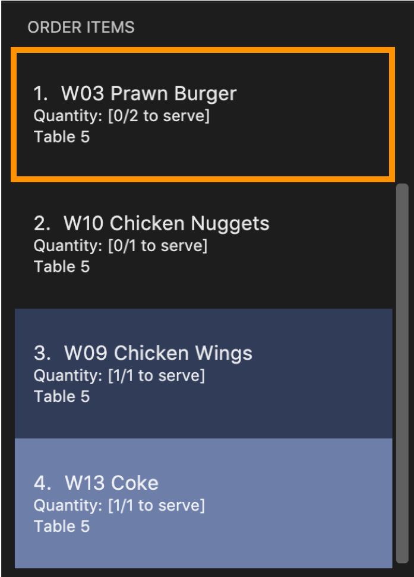

By: Team W09-3 Since: Feb 2019 Licence: MIT
- 1. Introduction
- 2. Quick Start
- 3. Modes and Commands
- 3.1. General
- 3.2. Changing Modes
- 3.3. Restaurant Mode
- 3.4. Table Mode
- 3.4.1. Adding item(s) to an order :
addToOrder - 3.4.2. Adding a note to an order item :
addNote(Coming in v2.0) - 3.4.3. Deleting an item from an order :
deleteFromOrder - 3.4.4. Clearing all the items in an order :
clearOrder - 3.4.5. Marking an item in an order as served :
serve - 3.4.6. Calling the bill of an order :
bill
- 3.4.1. Adding item(s) to an order :
- 3.5. Menu Mode
- 3.6. Statistics Mode
- 4. FAQ
- 5. Glossary
- 6. Command Summary
1. Introduction
RestOrRant (ROR) is a desktop restaurant management application that allows restaurant managers, waiters and cashiers to perform restaurant front-end operations more efficiently. With ROR, you can easily manage table allocation, handle orders, track item availability and check restaurant statistics.
RestOrRant mainly uses a Command Line Interface (CLI) to perform operations, but it also boasts a Graphical User Interface (GUI) to provide you with visual information for ease of reference.
Interested? Head over to Section 2, “Quick Start” to get started with RestOrRant!
2. Quick Start
Welcome to RestOrRant! If you are just starting out, this quick start section will help you get RestOrRant up and running in no time at all and equip you with the basics so that you can quickly enjoy and master the features that ROR has to offer.
2.1. Using the User Guide
This User Guide is filled with information to help you set up and make the most of RestOrRant. You will be able to learn more about the commands that are available for you, together with examples of how they work. These commands are also consolidated into a summary for your convenience.
To complement your reading experience, you may find it useful to refer to the table below for the different symbols and formatting used throughout this guide.
|
Command that can be typed into the command box |
|
Expected result after executing the command |
|
Tips and tricks that might be useful |
|
Additional information that is good to know |
|
Important pointers to take note |
2.2. First steps
These steps will guide you in installing RestOrRant on your computer.
-
Ensure you have Java version 9 or later installed in your computer.
You can download the latest Java version here. -
Download the latest restorrant.jar here.
-
Copy the file to the folder you want to use as the home folder for RestOrRant.
-
Double-click the file to start the app. The interface below should appear in a few seconds.

2.3. Understanding the Mode system
RestOrRant operates in 4 different modes and you will start off in the default Restaurant Mode. Each mode is dedicated to a main feature that ROR provides and comes with its own colour, display and set of commands for that feature. You may switch between the modes by using the commands provided.
The 4 modes are shown below and you may click on them to find out more information about each mode, along with the commands that are available for you in that mode.

Restaurant Mode |

Table Mode |

Menu Mode |

Statistics Mode |
2.4. Navigating the user interface
When you open up RestOrRant, you will see various components in the user interface. While the different modes display different information that is relevant to the specific mode, the general interface remains the same and the different components are labeled in the image below.

The function of each component is as follows:
-
Command Box: This is where you can key in commands to perform operations in RestOrRant.
-
Results Display: This is where the results are displayed after executing a command.
-
Mode Display: This indicates the current mode that you are in.
-
Side Panel: This panel lists information that is relevant to the mode.
-
Main Panel: This panel displays information that is relevant to the mode.
You can find out what is displayed in the side and main panels for each mode in Section 3, “Modes and Commands”.
2.5. Using commands
You can use the commands described in Section 3, “Modes and Commands” by typing them into the Command Box and pressing Enter to execute it.
For example, typing help and pressing Enter will open the help window.
Shortcuts are also provided for some commands to allow you to type faster and perform operations more quickly.
For example, you may type the shortcut b instead of the full bill command to return the bill.
Note that the commands need to be executed in the correct mode as some of the shortcuts perform different operations when used in the different modes.
For example, the add shortcut performs addTable in Restaurant Mode but addToMenu in Menu Mode.
|
You may need to include parameters for some commands and the format of each command is provided in the command descriptions. You may refer to the pointers below to understand the formatting used to write the command format.
Some of the parameters have restrictions and they are stated below.
Some commands may make changes to the data in RestOrRant. There is no need to save manually as the data will be automatically saved in the hard disk.
2.6. Using RestOrRant in your restaurant
RestOrRant comes preloaded with sample data to allow you to explore and get familiar with the application. The examples in this User Guide also make use of this data so that you can easily follow along.
When you are ready to use RestOrRant in your restaurant, use the commands in the following steps to set up and personalise ROR for your own usage. You can find out more information about each command by clicking on them.
-
clearRestOrRant: Remove all the sample data so that you can fill it with your own restaurant’s information. -
addTable(in Restaurant Mode): Populate the tables in ROR with your restaurant’s seating information by specifying the number of seats for each table, in ascending order of table number.-
For example, if your restaurant has 3 tables, and Table 1 and 2 have 4 seats while Table 3 has 8 seats, you can type in
addTable 4 4 8.You can add all the tables with just a single command!
-
-
menuMode: Switch over to Menu Mode to fill up the menu in ROR with your restaurant’s menu information. -
addToMenu(in Menu Mode): Add each item into the menu by specifying the item code, name and price.-
For example,
addToMenu c/A05 n/Salad p/4.50will add a new salad item to the menu in ROR.
-
That’s it! Your RestOrRant is now ready for use. You may head on to Section 3, “Modes and Commands” to learn more about the commands that are available for you.
3. Modes and Commands
In this section, you can find details about the commands that RestOrRant supports. These details include the command function, format and example usage. The commands have been organised based on their function and the mode that they can be executed in so that you can easily look for the command that you want.
3.1. General
RestOrRant provides general commands that are not feature-specific, but they enhance your RestOrRant experience as a whole. You can use these commands in any mode.
3.1.1. Viewing help : help
If you ever feel lost or cannot remember what command to use, don’t fret! You can access this User Guide any time directly from RestOrRant by simply typing this command.
| You can also access the help window by clicking on in the menu bar. |
|
The help window will open. |
3.1.2. Viewing history : history
You can easily view all the past commands used by you or your other colleagues by using this command, which will display the list of past commands in reverse chronological order.
| You can also use the ↑ and ↓ keys to view past commands in the Command Box. |
|
The list of past commands will be shown in the Results Display. |
3.1.3. Clearing all the data : clearRestOrRant
If you need to start from a clean slate, you can clear all the data in RestOrRant with this command and restart from an empty application.
| This action is not reversible! Be certain before you use this command. |
| No shortcut is provided and the command is intentionally long to prevent accidental use of this command. |
|
All data in RestOrRant will be deleted and the side and main panels will be empty. |
3.1.4. Exiting the program : exit
When you are done with using RestOrRant, you can exit the application with this command.
| You can also exit RestOrRant by clicking on in the menu bar. |
|
RestOrRant exits and the application window closes. |
3.2. Changing Modes
The commands in this section allow you to switch between modes to use the features that each mode provides. You can use these commands in any mode except if you are already in the mode that you are trying to switch to.
| You may find out more information about RestOrRant’s Mode system here. |
3.2.1. Switching to Restaurant Mode : restaurantMode
You can use this command to switch over to Restaurant Mode to manage the occupancy of the tables in the restaurant.
| Restaurant Mode is the default application mode when first starting up RestOrRant. |
|
The user interface switches to Restaurant Mode. |
3.2.2. Switching to Table Mode : tableMode
You can use this command to switch over to Table Mode for the specified table number to handle the orders of that table.
| You can only access Table Mode for tables that exist in the restaurant and are currently occupied. The tables can be updated in Restaurant Mode. |
| You can use this command in Table Mode if you are switching to a different table number. |
|
The user interface switches to Table Mode. The specified table number is also indicated in the Results Display and as part of the Current Mode in the status bar. |
For example, after executing The table number will also be displayed in the Current Mode portion of the status bar until you change the mode, as shown below. |
3.2.3. Switching to Menu Mode : menuMode
You can use this command to switch over to Menu Mode to modify the menu stored in RestOrRant.
|
The user interface switches to Menu Mode. |
3.2.4. Switching to Statistics Mode : statisticsMode
You can use this command to switch over to Statistics Mode to view revenue and order statistics for your restaurant.
| The default Revenue Panel view is Daily when you first switch over to Statistics Mode. You can find out more about the different views here. |
|
The user interface switches to Statistics Mode. |
3.3. Restaurant Mode
In Restaurant Mode, which is the default mode, you can perform table-related operations and view the order items across all tables.
3.3.1. Adding tables : addTable
Adds tables to the restaurant.
Format: addTable NUMBER_OF_SEATS [NUMBER_OF_SEATS]…
Examples:
-
addTable 4 -
addTable 4 2 4
3.3.2. Editing the occupancy : editPax
Edits the occupancy of the table.
Format: editPax TABLE_NUMBER NUMBER_OF_CUSTOMERS
Examples:
-
editPax 2 0 -
editPax 1 4
3.3.3. Editing the available seats : editSeats
Edits the number of available seats at a table.
Format: editSeats TABLE_NUMBER NUMBER_OF_SEATS
Examples:
-
editSeats 3 4
3.3.4. Clearing all the tables : clearTable
Clears the RestOrRant of all tables.
Format: clearTable
3.3.5. Getting available tables for customers : spaceFor (Coming in v2.0)
Searches the restaurant for the table that best fits the number of customers to be seated.
Format: spaceFor NUMBER_OF_CUSTOMERS
Examples:
-
spaceFor 5
3.4. Table Mode
In Table Mode, you can handle orders from the current table, which is given by the table number that was specified in the tableMode command.
You can take orders, track the serving status of the items ordered, and calculate the bill for that table in this mode.
The user interface for Table Mode (on Table 5) is shown in the image below.

The function of the side and main panels are as follows:
-
Order Panel: This panel shows you the list of items ordered by the current table, arranged in chronological order. It also indicates the quantity left to serve for each item, and the background turns dark when the item is fully served.
-
Menu Panel: This panel displays the items on the menu along with their item codes for you to conveniently refer to when taking orders.
Here are the commands that you can use in this mode to efficiently handle the orders in your restaurant.
3.4.1. Adding item(s) to an order : addToOrder
As you are taking an order from customers, this command allows you to record down the items that were ordered by the table by specifying the item code and quantity for each item that was ordered. You may also add more quantities to an item that has already been previously ordered by the table if customers choose to order more.
| The maximum quantity of an item that can be ordered by a table is 2,000,000. |
| The item codes for each item on the menu can be easily found from the Menu Panel. |
You can only add item codes that exist in the menu. You may add items to the menu using the addToMenu command in Menu Mode.
|
| You can add multiple or duplicate order items in a single command! If any of the item codes do not exist in the menu or if the new quantity exceeds 2,000,000, then that item and subsequent items will not be added to the order. |
|
You will see a success message in the Results Display and the updated order items will be displayed in the Order Panel. |
For example, Table 5 initially has 4 items in the Order Panel as shown below. Note that the quantity of Coke ordered is 1. 
Suppose the customers at Table 5 want to order 1 more Cheeseburger and 1 more Coke. After executing 
The Order Panel will also be updated and you will now see 5 items displayed. As seen in the image below, 1 portion of Cheeseburger has been added as the 5th item, while the quantity of Coke ordered has been updated from 1 to 2. 
|
3.4.2. Adding a note to an order item : addNote (Coming in v2.0)
Sometimes, customers may have special requests for their orders, such as reducing the level of spicyness or removing certain ingredients from their meal. You can easily add all these special requests and more to the order item with this command.
You can only add notes to item codes that have already been ordered by the table. You can add items to the order using the addToOrder command.
|
|
You will see a success message in the Results Display and the note will appear in a tag beside the item name in the Order Panel. |
For example, after executing |
3.4.3. Deleting an item from an order : deleteFromOrder
If you have accidentally keyed in an incorrect order or if the customer decides not to order a particular item anymore, you can remove that item from the table’s order with this command.
| You can only delete item codes that have already been ordered by the table. |
|
You will see a success message in the Results Display and the deleted order item will no longer be displayed in the Order Panel. |
For example, Table 5 initially has 4 items in the Order Panel as shown below. Note that Coke has been ordered by the table.
Suppose the customers at Table 5 decide not to order Coke anymore. After executing The Order Panel will also be updated and you will now only see 3 items displayed. As seen in the image below, Coke has been removed from the order. 
|
3.4.4. Clearing all the items in an order : clearOrder
This command allows you to clear all the items ordered by a table so that you can take orders from scratch.
This command is irreversible and will not save the order under restaurant statistics. If the customers are done with the meal, use the bill command instead, which will automatically clear the orders from the table.
|
|
You will see a success message in the Results Display and the Order Panel will be empty. |
For example, Table 5 initially has 4 items in the Order Panel as shown below.
After executing 
The Order Panel will now be empty, as seen in the image below. |
3.4.5. Marking an item in an order as served : serve
Once you have served items to the table, you can update the serving status of those items by using this command so that you can easily keep track of what has and has not been served.
You can only serve item codes and quantities that have not already been served for the table. You can add items to the order using the addToOrder command.
|
| If the quantity is not specified, the default quantity served is 1. |
|
You will see a success message in the Results Display and the order item’s quantity to serve in the Order Panel will be updated. The background of the order item also turns dark once it is fully served. |
For example, Table 5 initially has 4 items in the Order Panel as shown below. Note that there are still 2 Prawn Burgers that have yet to be served.
Suppose the Prawn Burgers have been served and you want to update their serving status in RestOrRant. After executing The Order Panel will also be updated and you can see from the image below that there are no more quantities of Prawn Burger to serve. Since it is fully served, the background of the Prawn Burger item has turned dark.

|
3.4.6. Calling the bill of an order : bill
Now that all the orders have been served and the customer is ready to pay for the meal, you can call the bill to obtain the customer’s receipt.
| This command is irreversible. Once the command is executed, all orders and the table occupancy will be cleared to allow new customers to use the table. The money earned from the bill will automatically be added to the RestOrRant’s revenue statistics. |
The bill can only be called when all order items have been served.
|
|
You will see a success message in the Results Display and the user interface will change its colour scheme and
display. In the new user interface, the order items in the order panel are cleared and the menu panel displays the
customer’s receipt. |
Given that Table 5 has 4 items in the Order Panel as shown below. Note that all items have been served. 
When bill is called, the user interface changes to display the receipt as shown below: 
When you switch to Restaurant Mode using 
|
3.5. Menu Mode
In Menu Mode, you can perform menu-related operations. The application will display the current items on the menu.
3.5.1. Adding menu items to the menu : addToMenu
Adds the specified item to the menu.
Format: addToMenu ITEM_CODE ITEM_NAME ITEM_PRICE
Examples:
-
addToMenu c/A02 n/French Fries p/2.00
Adds French Fries with item code A02 and price $2.00 to the menu.
3.5.2. Deleting menu items from the menu : deleteFromMenu
Deletes the item specified by the item code from the menu.
Format: deleteFromMenu ITEM_CODE
Examples:
-
deleteFromMenu A02
Deletes the menu item with item code A02 from the menu.
3.5.3. Clearing all the items in the menu : clearMenu (Coming in v1.4)
Removes all menu items from the menu.
Format: clearMenu
Examples:
-
clearMenu
3.6. Statistics Mode
In Statistics Mode, you can obtain statistics related to your restaurant, such as the popularity of dishes and the revenue of a specified year, month or day.
The user interface for Statistics Mode is shown in the image below.

The function of the side and main panels are as follows:
-
Item Panel: This panel shows you the list of menu items sorted by its popularity. This is meant to help you decide what ingredients to order to cater to the demands of the popular dishes.
-
Revenue Panel: This panel displays the revenue from the recent years, months or days, depending on the view that you have selected. This allows you to study trends in your restaurant’s revenue.
By default the Statistics Mode displays revenue up to 30 days in the Revenue Panel unless you execute
yearly, monthly or daily commands to change its display respectively.
|
Here are the commands that you can use in this mode to study the statistical data of your restaurant.
3.6.1. Changing the Revenue Panel to yearly : yearly
This command changes the Revenue Panel to display the statistical yearly revenue for you to study the
yearly revenue trends.
|
You will see a success message in the Results Display and the Revenue Panel changes to display up to 30 yearly revenue starting from the most recent record. |
Notice that the first yearly revenue is the most recent year recorded. This saves you the trouble of scrolling through the rest of the record. |
3.6.2. Changing the Revenue Panel to monthly : monthly
This command changes the Revenue Panel to display the statistical monthly revenue for you to study the
monthly revenue trends.
|
You will see a success message in the Results Display and the Revenue Panel changes to display up to 30 monthly revenue starting from the most recent record. |
Notice that the first monthly revenue is the most recent month recorded. This saves you the trouble of scrolling through the rest of the record. 
|
3.6.3. Changing the Revenue Panel to daily : daily
This command helps you to change the Revenue Panel back to its default display of the statistical daily revenue
for you to study the daily revenue trends.
|
You will see a success message in the Results Display and the Revenue Panel changes to display up to 30 daily revenue starting from the most recent record. |
Notice that the first daily revenue is the most recent day recorded. This saves you the trouble of scrolling through the rest of the record. 
|
3.6.4. Getting the total revenue : revenue
If you want to obtain the revenue earned in a particular year, month or day, you can obtain it with this command.
|
Order of the parameters does not matter. For example, r y/2019 d/6 m/4 will still return the revenue earned on
6th April 2019.If no arguments are included, by default the revenue earned from the current day will be returned. |
|
If there are no records of the stated period, it will be returned as $0. Refer to commands to take note of the parameter restrictions of YEAR, MONTH and DAY.
|
|
You will see a success message and the revenue of the specified year, month or day in the Results Display. Examples are provided below. |

|
4. FAQ
Q: How do I transfer my data to another Computer?
A: Install the application in the other computer and copy over the data folder from your previous RestOrRant folder along with all the files inside.
| There should be 4 files in the data folder, menu.json, orders.json, statistics.json and tables.json. |
6. Command Summary
Here is our reference sheet so that you can have all of RestOrRant’s commands and features at your fingertips!
6.1. General
These commands can be used in any mode.
| Command | Shortcut | Usage | Example |
|---|---|---|---|
F1 |
|
Shows the user guide |
|
|
|
Shows the past commands |
|
- |
|
Clears all the data in RestOrRant |
|
- |
|
Exits RestOrRant |
6.2. Changing Modes
These commands can be used in any mode unless you are already in the mode that you are trying to switch to.
| Command | Shortcut | Usage | Example |
|---|---|---|---|
|
|
Switches to Restaurant Mode |
|
|
|
|
|
|
|
Switches to Menu Mode |
|
|
|
Switches to Statistics Mode |
6.3. Restaurant Mode
These commands can only be used in Restaurant Mode.
| Command | Shortcut | Usage | Example |
|---|---|---|---|
|
|
|
|
- |
|
|
|
- |
|
|
|
|
|
Clears all the tables in RestOrRant |
6.4. Table Mode
These commands can only be used in Table Mode.
| Command | Shortcut | Usage | Example |
|---|---|---|---|
|
|
|
|
|
- |
|
|
|
|
|
|
|
|
Clears all the items from the current table’s order |
|
|
|
|
|
|
|
Returns the bill for the current table’s order |
6.5. Menu Mode
These commands can only be used in Menu Mode.
| Command | Shortcut | Usage | Example |
|---|---|---|---|
|
|
|
|
|
|
|
6.6. Statistics Mode
These commands can only be used in Statistics Mode.
| Command | Shortcut | Usage | Example |
|---|---|---|---|
|
|
Displays the revenue from up to the past 30 years in the Revenue Panel |
|
|
|
Displays the revenue from up to the past 30 months in the Revenue Panel |
|
|
|
Displays the revenue from up to the past 30 days in the Revenue Panel |
|
|
|
|